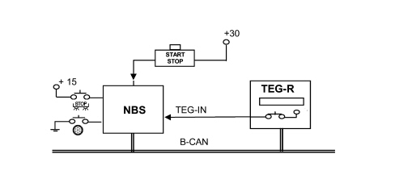
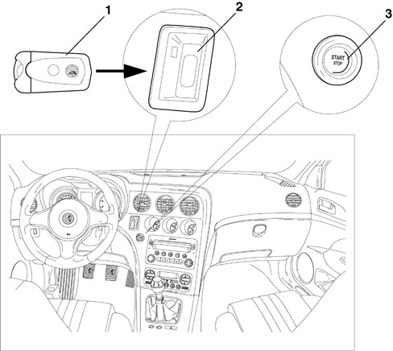
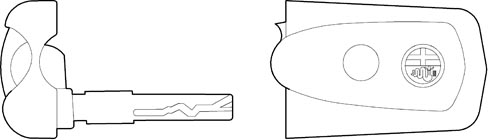
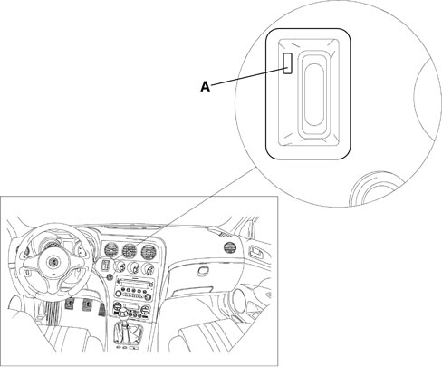
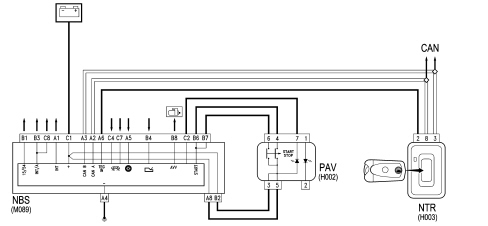
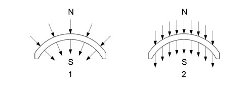
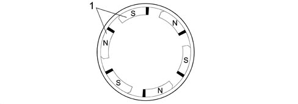
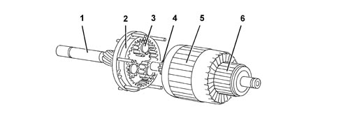
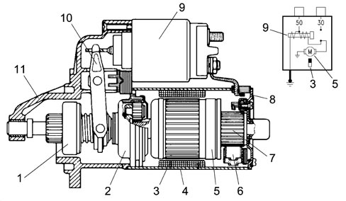

T.E.G. MODULE “TRANSMITTER FOR ENTRY AND GO”
The TEG is part of the Smart-Key system which comprises the following components:
- T.E.G. (Transmitter for Entry and Go) electronic key;
- TEG-Reader for radiofrequency receiver and electronic key;
- Steering Lock Node NBS;
- Start/Stop button.
The Smart-Key system carries out the following functions on the vehicle:
- vehicle access through remote control radiofrequency recognition;
- vehicle ignition/starting through immobilizer system;
- power supply distribution (+15, INT/A, +50) through Steering Lock Node (NBS);
- mechanical steering lock/release;
- mechanical back-up key.


|
The Smart-Key system is far more secure that all previous protection systems with immobilizers, etc. because the control and security codes are memorized is 4 separate areas of the CAN: the Body Computer, engine management control unit, steering lock node and TEG-Reader. |
Vehicle access
Pressing the TEG buttons emits a radiofrequency signal that is received by the TEG-Reader Node which acts as an interpreting and sorting "centre" for the vehicle access system commands.
The commands received are sent to the various functions connected with vehicle access (central locking system, alarm, blinker, courtesy lights) in order to produce the access or abandonment manoeuvre desired by the customer.
There are 3 different ways of pressing one or more of the TEG buttons:
- single press: the button is pressed once only;
- double press: the button is pressed twice within 1 second;
- long press: the button is pressed constantly for more than 2 seconds.
Different functions are activated depending on the type of operation:
The remote control function is performed by 3 buttons each with a specific function in accordance with the following table:
|
Button/Function |
Single press |
Double press |
Long press |
|
Lock button |
Vehicle lock. Switching on of alarm (if present) |
Switching on of dead-lock function |
Superclosing (closing of windows + closing of sun roof if present) |
|
Unlocking button |
Vehicle unlocking according to set-up. Switching off of alarm (if present) |
Vehicle unlocking |
Superopening (opening of windows + opening of sun roof if present) |
|
Boot button |
Boot unlocking and opening |
N.A. |
Rearscreen unlocking (on Station Wagon only) |
|
|
For the dead-lock management the command to switch the dead-lock on is only sent if all the doors and the boot are properly closed. If this is not the case, the user is advised by the signal that the doors are open activated when the doors are locked: a further dead-lock command is therefore simply "not considered". |
Automatic locking following door unlocking:
if, within 150 seconds of the lock unlocking command being carried out, by the TEG, the user shows no intention of taking possession of the vehicle (opening the doors/boot or key in ON position) the locking of the locks must be commanded automatically. This automatic locking command of the locks does not produce signals.
Multiple command and/or overlapping commands inhibition:
the moment the +30 supply from the battery is connected, the NBC inhibits the implementation of any other door unlocking/locking command for 2 seconds.
Components

1 - T.E.G.
2 - T.E.G. Reader
3 - Start button
Remote control
The remote control system comprises the following components:
- TRANSMITTER: incorporated in the TEG, radiofrequency and sends the rolling code to the receiver.
|
|
The frequency varies according to the country it is sold in: (e.g. Europe 433.92 MHz). |
The user can carry out the following functions using the TEG:
- central locking - unlocking of the doors.
- opening-closing of the windows and sun roof.
- switching of of the courtesy light.
- switching on-off of the alarm (if present).
The transmitter has a range of about 20 m.
Receiver
The radiofrequency receiver is built into the TEG-Reader module.
|
|
The frequency varies according to the country it is sold in. |
It memorizes up to eight transmitters and allows the remote control operations mentioned above.
The receiver has the following functions:
- receiving and decoding the signals coming from the transmitter.
- managing the transmitter programming.
- managing the command for opening and closing of the doors.
- to carry out self-diagnosis.
The receiver can memorize up to eight remote control codes.
Teg with 3 buttons
The TEG homologation is in accordance with Dir. 95/56 CE and conforms with the requirements of European insurance companies and their associated technical centres.
The TEG is an electronic device which, used in place of a traditional key, produces:
- access to the vehicle by carrying out all the normal operations by remote control;
- starting of the vehicle: if introduced into the special reader, it deactivates the electric steering lock and provides the go ahead for starting by means of the special START button.
The remote control section has a 433.92 MHz transmitter with 3 control buttons for the vehicle access functions and a special retractable plastic insert that can be extracted manually.
Mechanical back-up key
In emergencies, the TEG is used like a normal mechanical key in order to carry out manoeuvres on the mechanical back-up pawls (door opening-closing, air bag activation-deactivation, etc.).
The mechanical key is a special insert that can be extracted manually from the TEG.

Extraction in an emergency
The TEG can be released in any circumstances, even with the vehicle moving, through the mechanical emergency insert:
1. extract the mechanical insert from the TEG
2. introduce the insert in opening A and press
3. the TEG is mechanically released and ejected

The NBS will detect that this operation has been carried out and will send a signal to the instrument panel to indicate that the steering is not locked.
Replacing the transmitter batteries
When the switching off command is received the receiver will send the alarm system a batteries run down signal.
The transmitter signals that the batteries are run down by giving a single flash lasting 200 ms when the button is pressed: the transmitter returns to normal flashing mode if the battery charge returns to above the preset level.
From the moment the transmitter signals the batteries run down condition, a further 100 activations (switching on and off) are guaranteed.
The restoring of the correct battery status reading takes place the 2nd time the transmitter is activated after the batteries have been replaced.
Start/stop button (pav)
For safety reasons the PAV consists of a dual circuit button with a dual output signal.
Both outputs are acquired by the NBS and the user''s wish is recognized through the presence of only one of the two signals.
If the Start/Stop is faulty, the system behaves as described below.
- If the two pieces of information are contradictory, the NBS simply acquires the signal that the button has been pressed, through one of the 2 PAV signals, to allow the vehicle to be started/switched off.
If the PAV signal is defective, the recognition may only take place with the CAN activated. To wake the system up, simply open one of the vehicle doors.
- If one or both of the NBS inputs detects that the PAV has been pressed for 30 seconds consecutively, the information will be ignored until the transition is detected to prevent undesired starting from taking place.
In both cases the locking of the steering is inhibited when the TEG is extracted and a warning message is sent to the instrument panel.
Operation
Key on
The insertion of a TEG in the TEG reader produces the release of the steering by the NBS and the consequent activation of the +15.
To move from a Key OFF status to a Key ON status it is necessary to insert a TEG in the TEG Reader or to press the start/stop button if the TEG is already insertedin the reader (either inserting the TEG or pressing the Start/Stop button causes the CAN to wake up).
At this point the NBS asks the NBC for permission to give the +15 and, after checking the Immo code via the NTR, it releases the steering and sends the go ahead to the Power ON.
When the go ahead for the NBC is received by the NBS the +15/54, INT and INT/A loads are activated.
If the Immo is not recognized, the NBS does not receive the go ahead from the NBC and the steering is not released.
When the TEG is inserted in the reader the NBS detects the transition of the TEG_IN signal and requests the instrument panel (NQS) to display the message illustrating the starting procedure.
This message will be present for 10 seconds from the insertion of the TEG or until there is an attempt at starting or the TEG is extracted.
If there is a problem preventing the NBS from activating the +15 or from releasing the steering, a message is sent from the alarm to the instrument panel.
On versions with automatic transmission if, in the +15 status, the NBS detects, via the CAN signal, that the gear lever is in a position other than Park, the NBS will send a signal to lock the TEG inside the reader.
Lighting
The lighting of the Start/Stop button is managed by the NBS and follows the status of the B-CAN, in particular:
- at the key on: the button is always lit up.
- at the key off: the button is lit up as long as the B-CAN is activated.
Once it returns to sleep mode, the LED in the button is also switched off.
The lighting of the TEG Reader (inserted in the TEG) takes place as follows:
- Key Off: the lighting of the slot follows the B-CAN status: as long as the B-CAN is activated, the slot is lit up, when it returns to sleep mode, the slot light goes out.
- Key On: once the TEG is locked in the reader, the slot lighting is switched off.
Deactivation of +15 on or switching off of engine
With the vehicle Key On status, if the Start/Stop button is pressed for at least 2 seconds, with the brake and clutch released, the NBS deactivates the +15/54, INT and INT/A loads and activates the release of the TEG in the TEG Reader.
If, at the time of the deactivation, the speed of the vehicle is more than 4 km/h, then the NBS does not command the locking of the steering when the TEG is extracted.
In this case the user is advised through the following signal at the NQS: "The steering will not be locked".
Timed Key-off
After the activation of the Key-on (+15), the NBS will automatically disable the +15, INT, INT/A loads if none of the following operations is carried out for a period of 20 minutes:- starting manoeuvre
- vehicle speed > 10 km/h
- engine running
- change of status to Key-off.
This strategy allows the vehicle to be towed at the Key-on, the towing of the vehicle raised, a test on the roller bench with the engine on or off.
In the case of vehicles equipped with automatic transmission, the TEG will not be released if the gear lever is not in the park position.
Activation of starting (from ignition on)
The engine is started by pressing the Start/Stop button after pressing the clutch pedal or the brake pedal for versions with a manual gearbox or the brake pedal only for versions with a robotized gearbox.
Pressing the Start/Stop button without pressing the clutch pedal or the brake pedal causes the vehicle to switch off (Key Off).
When the starting command is recognized, before activating the starter motor the NBS checks the following conditions:
- clutch/brake pedal pressed within 200 ms (timeout) of the activation of the +15
- validation of +15 signal present at the B-CAN as well
- starting enablement by the NBC (IMMO check)
The starter motor is driven (+50) until the clutch/brake pedal or the Start/Stop button is released or for a maximum of 10 seconds.
If starting takes place correctly, the NBS, evaluating the engine rpm signal, commands the mechanical locking of the TEG in the TEG Reader.
If the locking command for the TEG is not successful, the starting can continue however, but if there is a later attempt to extract the TEG from the reader, the NBS will not command the switching off (key-off) which can only take place via the Start/Stop button.
On versions with automatic transmission, if the latter is not in the park/neutral position nothing will happen. If the cranking condition persists (+50) without the go ahead from the NCA, it will be necessary to wait for the above conditions to cease (the Key ON will be maintained). Then, if the customer moves the lever to park/neutral and the cranking conditions persist, it will not be started during the starting stage (motor turning over). Starting can only take place after the gear lever has been moved to park/neutral and the start/stop button is released. After this, following a new check on the conditions described in the "engine starting" paragraph, enablement for starting can be provided.
| On versions with automatic transmission, if the driver releases the rotation of the TEG whilst driving through the recovery procedure it will be locked again at the first shift from Park to any other position. |
Activation of starting (from key-off)
If, after the TEG is inserted in the reader with the consequent activation of the Key-on (+15) for a period of 20 minutes, no operations are carried out, then the NBS will automatically disable the +15, INT, INT/A loads (key-OFF).
Under these circumstances, when the Start/Stop button is pressed with the clutch pedal or the brake pedal pressed and a valid TEG inserted in the reader, the NBS will reactivate the loads (Key-ON) and if the button is still pressed it will also activate the engine starting procedure already described again.
If the NBS is pristine (without Immobilizer programming), at the Key On it is necessary to release the START button and press it again to start up the engine.
| Failed STARTING: if starting fails it is no longer possible to "push start" the engine by activating the starter motor with a gear engaged (the clutch/brake should be pressed to enable the START button and disconnect the transmission). |
On versions with automatic transmission, if the latter is not in the park/neutral position nothing will happen. If the cranking condition (+50) persists without the enablement from the NCA it is necessary to wait until the above conditions cease (the Key ON is maintained). Then, if the customer moves the lever to park/neutral with the cranking conditions persisting, there should be no starting during the starting stage (motor turning over). Starting can only take place after the gear lever has been moved to park/neutral and the start/stop button is released. After which, following a new check on the conditions described in the "engine starting" paragraph, the go ahead for starting can be provided. On versions with automatic transmission, if the driver releases the rotation of the TEG whilst driving through the recovery procedure it will be locked again at the first shift from Park to any other position.
Switching off the vehicle and extracting the key
It should be noted that if the engine is started, pressing the Start/Stop button again, irrespective of the status of the brake or clutch pedal, will be interpreted as the desire by the user to switch off the engine.
The NBS deactivates the +15/54, INT and INT/A loads and activates the unlocking of the TEG in the TEG Reader. If, at the time of the deactivation of the loads, the speed of the vehicle is more than 4 km/h, then the NBS does not command the locking of the steering when the TEG is extracted.
System signals
The Smart Key system controls several warning lights and/or sends message signals to the instrument panel for the following functions:
- vehicle access and/or alarm
- steering lock/release
- vehicle starting and switching off
- electric steering lock failure
- failed TEG recognition
- Start/Stop button failure signal
- steering not locked signal
- TEG reader failure signal
- TEG in reader signal when driver''s door is opened at Key-Off
- TEG insertion signal
Alfa romeo code system
The TEG also manages the operation of the Immobilizer system known as the ALFA ROMEO CODE:
The system is based on the transmission and reception of a radiofrequency signal with a rolling code.
Each transmission produces a rolling code managed by a mathematic algorithm.
The tramsmission message is memorized in the receiver in a non volatile memory (EEPROM) in such a way that information is not lost even if the batteries are replaced.
Programming the remote control
On delivery, the receiver contains the universal code 00H AAH AAH A2H that allows activation in the factory with a universal transmitter, this code should then be deactivated at the first programming.
Proceed as instructed by the Examiner.
ELECTRIC STEERING LOCK
Since no mechanical key is present, the steering lock function is performed electrically via the steering lock node.
The steering lock node releases the steering when the ignition-operated services are activated. INT, i.e. when a known TEG is identified in the TEG Reader.
The locking of the steering by the steering lock node takes place when the TEG is extracted from the TEG Reader.
| In the event of emergency TEG removal, the steering is NOT locked. Similarly, if the TEG is removed when the vehicle speed is greater than 4 km, the steering is NOT locked. In these cases, a message is displayed on the instrument panel display. |
| Since no recovery strategies are available for the steering lock, it is not possible to release it or start the vehicle if the steering lock node is not operational. Test using a diagnostic instrument (Examiner). |
 | If the battery is disconnected, the Steering Lock Node remains in the condition (unlocked or locked) that it is in: during workshop operations and repairs, whenever it is necessary to turn the steering wheel with the battery disconnected, leave the TEG inserted when the battery is disconnected. The steering will therefore remain released and free to turn. |
Communication between the steering lock node, ignition button and teg reader
The START/STOP button is supplied at pins 3 and 5 of the steering lock node, which forwards the direct power supply from pin C1.
When the button is pressed, START signals are sent from pins 4 and 6 to the steering lock node, pins B6 and B7. this sends an ignition command - "AVV" - from pin B8 - to the starter motor electromagnet winding.
| The supply and control signals for button H2 are "redundant" (two identical duplicate signals) for safety reasons, the wish of the user is recognized by means of the presence of only one of the two signals. |
The steering lock node supplies this power supply after a set of tests and checked. In particular, the TEG inserted status is sent from the TEG Reader via the CAN network - pins 3 and 8.
The same signal is sent in a redundant manner to the steering lock node - pin A6 - from pin 2 of the TEG Reader, and the latter, in turn, forwards it via the CAN.
Starting is only enabled if the clutch or the brake pedal is pressed: the steering lock node receives a signal from the clutch switch at pin A5, and both brake pedal signals: the NO contact (pedal pressed) at pin C4 and the NC contact (pedal released) at pin C7.
On versions with automatic transmission, the NBS asks the NCA for a starting enablement without which no power supply is sent to the button.

Teg reader receiver pin out
|
PIN |
SIGNAL |
|
1 |
n.c. |
|
2 |
TEG inserted signal to steering lock node |
|
3 |
B - CAN B |
|
4 |
n.c. |
|
5 |
n.c. |
|
6 |
Ignition-operated power supply |
|
7 |
Earth |
|
8 |
B - CAN A |
Steering lock node pinout
|
PIN |
SIGNAL |
|
A1 |
INT 2 output |
|
A2 |
B-CAN A |
|
A3 |
B-CAN B |
|
A4 |
Earth |
|
A5 |
Clutch pedal input |
|
A6 |
TEG present input |
|
A7 |
n.c. |
|
A8 |
START STOP button power supply |
|
B1 |
INT 1 output |
|
B2 |
START STOP button power supply |
|
B3 |
INT/A output (T21 relay) |
|
B4 |
Automatic transmission or robotized gearbox starting enablement input |
|
B5 |
n.c. |
|
B6 |
AVV input from START STOP button |
|
B7 |
AVV input from START STOP button |
|
B8 |
Output "50" for starter motor |
|
C1 |
Direct power supply |
|
C2 |
START STOP button led check |
|
C3 |
Robotized starting output |
|
C4 |
Positive signal from brake pedal NO contact |
|
C5 |
n.c. |
|
C6 |
n.c. |
|
C7 |
Positive signal from brake pedal NC contact |
|
C8 |
INT/A output |
Start stop button pin-out
|
PIN |
SIGNAL |
|
1 |
Power supply for key lighting |
|
2 |
Earth for lighting |
|
3 |
Power supply for vehicle ignition/start-up control |
|
4 |
Positive signal (AVV) from vehicle ignition/start-up control to steering lock node |
|
5 |
Power supply for vehicle ignition/start-up control |
|
6 |
Positive signal (AVV) from vehicle ignition/start-up control to steering lock node |
|
7 |
Negative signal controlling vehicle ignition/start-up command lighting led |
|
8 |
n.c. |
STARTER MOTOR AND COMPONENTS
Composition
The starting system is composed of the Smart Key system described above and the starter motor which is connected directly to the battery.
For some time now, in addition to motors with series or series/parallel windings, motors have been developed with ceramic manget ferrite type permanent magnet energizing.
Circular sector magnet with magnetically predirected crystals
The rough components are directed into the desired shape by pressing and extrusion. Lastly, after a thorough baking procedure, the material turns into the magnets that have a black ceramic structure. The magnetizing treatment takes place during the manufacturing process.
The magnets have a circular sector and thereby replace the polar part and the winding.

1 - Radial orientation
2 - Parallel orientation
Stator-inductor
The positioning of the magnets cannot be done through strong compression or by means of riveting because the magnets are reasonably fragile: they are secured by flexible means, clipw which, in some cases, are stuck to the casing. The casing assembly can be compared with a simple mechanical component without wires to be fitted using two special bolts; it has 6 magnetic poles.

1 - Permanent N-S magnets
Rotor-armature (with epicyclic reduction unit)
The rotor-armature is illustrated in the diagram below.

1 - Shaft
2 - Ring gear/crown wheel
3 - Satellite/planet gears
4 - Pinion/sun gear
5 - Armature
6 - Commutator/switch
Rotor-armature (with epicyclic reduction unit)
Given that the magnetic field is produced by permanent magnets, the energizing is the same in all motor operating conditions; in addition, as there are no energizing windings, there is no energizing current or ohmic resistance: the total resistance only depends on the armature circuit. The rotation speed is only influenced by the current that passes through the blades and reaches the rotor depending on the voltage. Since the motor is equipped with permanent magnets, i.e. with fixed polarity, the direction of rotation depends on how the current is sent to the blades.
When rotating the rotor transmits motion to the three satellite gears fitted on special supports that transmit their drive torque to the ring gear or crown wheel in one piece with the output shaft where the pinion is located and the engine flywheel is rotated. The optimum reduction radio 1:4.26 is 4.26 revs of the rotor for every revolution of the ring gear and the presence of permanent magnets makes it possible to produce small simply designed motors with a comparable power output in relation to motors with windings.

1 - Pinion with free wheel
2 - Epicyclic reduction unit
3 - Inductor permanent magnets
4 - Polar casing assembly
5 - Armature or rotor
6 - Blades
7 - Commutator
8 - Commutator side support
9 - Engagement relay
10 - Lever
11 - Control side support